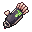
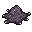
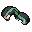

Lewati ke isi
Negeri Sunyi Wiki
Beranda
Zona
Monster
Item
Resep
Buff
Titik Bahan
Panduan
Beranda
Resep
Resep Sarung Tangan Serigala

Resep Sarung Tangan Serigala
Landasan Rune
Stasiun
Landasan Rune
Hasil
Sarung Tangan Serigala
Bahan

Kulit Serigala
×1 · Bahan Inti

Cangkang Kumbang
×1 · Bahan Pendukung